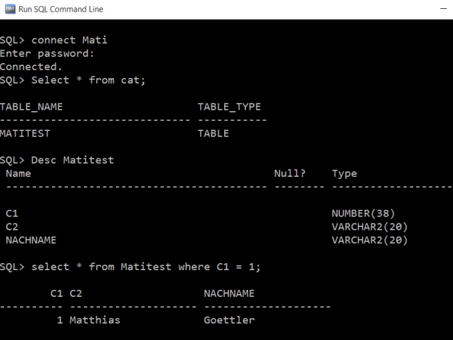
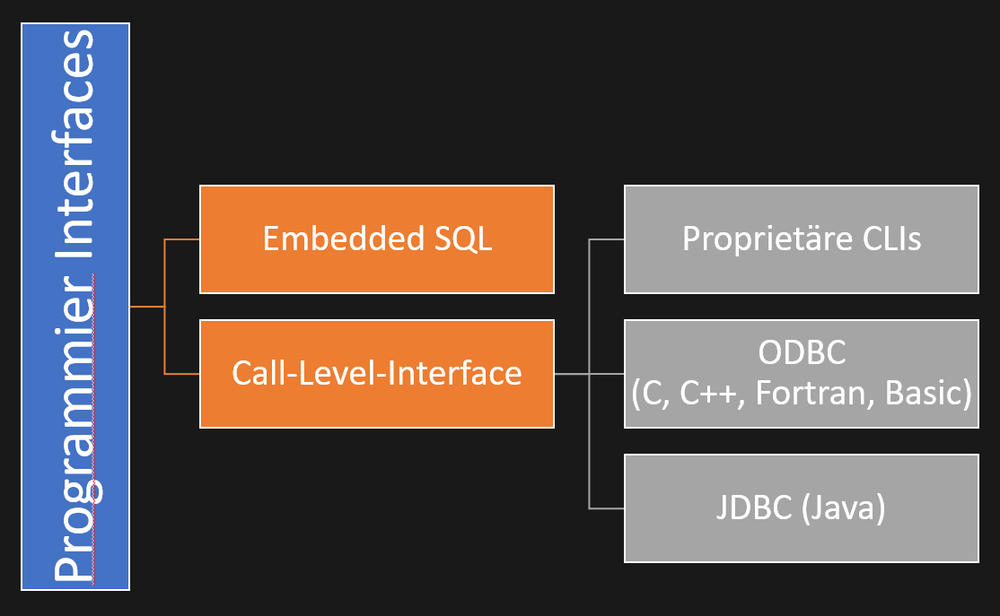
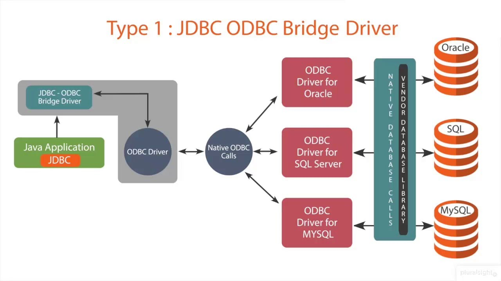

Schnittstellen
Datenbankschnittstellen
SQL Command Line

Source : Matthias Goettler @DHBW Karlsruhe -- Datenbanken II-Implementierung -- Modul 4 – Programmier- und sonstige Schnittstellen
DB spezifische SQL - Schnittstellen
- T-SQL - vom Sybase und Microsoft
- PL/SQL - Oracle
- besteht aus UserDefinedFunctions und
User-defined StoredProcess
PL/SQL - User-Defined Functions (UDF)
- Erweitert den Funktionsumfang des Datenbankservers
CREATE FUNCTION dbo.CtoF(Celsius FLOAT) RETURNS FLOAT RETURN (Celsius * 1.8) + 32 - Wird in einerm normalen SQL Anweisung evaluiert
SELECT Name, CtoF(BoilingPoint) FROM Elements
PL/SQL - User-Defined Stored Procedures (USP)
- Sammlung von wiederkehrenden SQL Anweisungen zusammengefasst in einer Prozedur
- Ausführung auf dem DB Server – nicht auf dem Client
- => Extrem schnell
PL/SQL - User-Defined Stored Procedures (USP)
CREATE [OR REPLACE] PROCEDURE procedure_name [(
parameter [,
parameter]) ]
IS
[VARIABLE declaration goes here]
BEGIN
[Executable SQL statements goes here]
EXCEPTION
[Error handling goes here]
END [procedure_name];
PL/SQL - User-Defined Stored Procedures (USP)
CREATE OR REPLACE PROCEDURE insert_employee(
empno_in IN NUMBER,
ename_in IN VARCHAR2,
job_in IN VARCHAR2,
-– Just the data type, don’t define the data length
IS
ecode NUMBER;
emesg VARCHAR2(200);
BEGIN
INSERT INTO baniya.emp(
empno,
ename,
job)
VALUES(
empno_in,
ename_in,
job_in);
COMMIT;
EXCEPTION
WHEN OTHERS THEN
ecode := SQLCODE;
emesg := SQLERRM;
dbms_output.put_line(TO_CHAR(ecode) || '-' || emesg);
END insert_employee;
PL/SQL - User-Defined Stored Procedures (USP)
declare
empno_in NUMBER := 1234;
ename_in VARCHAR2(20) := 'SCHEMID';
job_in VARCHAR2(50) := 'VP';
begin
baniya.insert_employee(empno_in, ename_in,
job_in);
end;

Source : http://www.dbarepublic.com/2016/04/oracle-stored-procedure-with-examples.html
Programmierschnittstellen
Programmierschnittstellen

Source : Matthias Goettler @DHBW Karlsruhe -- Datenbanken II-Implementierung -- Modul 4 – Programmier- und sonstige Schnittstellen
Embedded SQL
am Beispiel einer Single Row QueryJDBC
PreparedStatement stmt = conn.prepareStatement(
"SELECT MAX(SALARY), AVG(SALARY)"
+ " FROM DSN8710.EMP");
rs = stmt.executeQuery();
if (!rs.next()) {
// Error—no rows found
}
maxSalary = rs.getBigDecimal(1);
avgSalary = rs.getBigDecimal(2);
if (rs.next()) {
// Error—more than one row found
}
rs.close();
stmt.close();
SQLJ
#sql [ctx] {
SELECT MAX(SALARY), AVG(SALARY)
INTO :maxSalary, :avgSalary
FROM DSN8710.EMP
};
Embedded SQL
Vorteile
- SQLJ Befehle sind oft kürzer als gleichwertige JDBC Implementierungen
- Die SQL Syntax wird beim Compilen bereits überprüft
- Ergebnissets können strikt überprüft werden
- Performancevorteile gegenüber dynamischem SQL
Nachteile
- SQLJ benötigt einen zusätzlichen Schritt (Preprocessing)
- Viele IDEs haben keinen SQLJ Support
- keine Unterstützung in vielen Persistenz-Frameworks (z.B. Hibernate)
- Oracle 18c (12.2) hat SQLJ in der Datenbank nicht unterstützt.
Call-Level-Interface (Dynamic SQL)
Call-Level-Interface (Dynamic SQL)
Proprietäre CLIs
- Viele DBMS Hersteller bieten eigene CLIs an, die spezifische DB Features unterstützen
- Bekanntes Beispiele
- Teradata CLIv2
- IBM Db2®
Call-Level-Interface (Dynamic SQL)
Open DataBase Connectivity
- Open DataBase Connectivity beschreibt eine standardiesierte Datenbankschnittstelle
- ODBC stellt Programmierern eine Programmierschnittstelle auf eine Datenbank zur Verfügung
- ODBC ist plattform- und sprachunabhängig
- ODBC Code ist oft Komplex und wird heute z.B. in Java kaum verwendet
Call-Level-Interface (Dynamic SQL)
Java DataBase Connectivity
- Ist seit 1996 ein Teil des JDK
- JDBC gibt Programmierern in in JAVA eine Möglichkeit zur Datenbankverbindung
- JDBC Code ist leicht verständlich
Call-Level-Interface (Dynamic SQL)
Beispiel eines Java DataBase Connectivity Connectors in Java
public class FirstExample {
static final String DB_URL = "jdbc:mysql://localhost/TUTORIALSPOINT";
static final String USER = "guest";
static final String PASS = "guest123";
static final String QUERY = "SELECT id, first, last, age FROM Employees";
public static void main(String[] args) {
try(Connection conn = DriverManager.getConnection(DB_URL, USER, PASS);
Statement stmt = conn.createStatement();
ResultSet rs = stmt.executeQuery(QUERY);) {
while (rs.next()) {
System.out.print("ID: " + rs.getInt("id"));
System.out.print(", Age: " + rs.getInt("age"));
System.out.print(", First: " + rs.getString("first"));
System.out.println(", Last: " + rs.getString("last"));
}
} catch (SQLException e) {
e.printStackTrace();
}
}
}
Call-Level-Interface (Dynamic SQL)
Unterschied ODBC ⚡ JDBC

Source : https://apcpedagogie.com/le-pilote-jdbc/
Call-Level-Interface (Dynamic SQL)
Unterschied ODBC ⚡ JDBC
| Vergleichsgrundlage | JDBC | ODBC |
|---|---|---|
| Basic | JDBC ist Java-spezifisch sprach- und plattformabhängig! | ODBC ist sprach- und plattformunabhängig. |
| Funktion | Java-Datenbankverbindung. | Öffnen Sie die Datenbankverbindung. |
| Code | Code ist leicht zu verstehen. | Code ist komplex. |